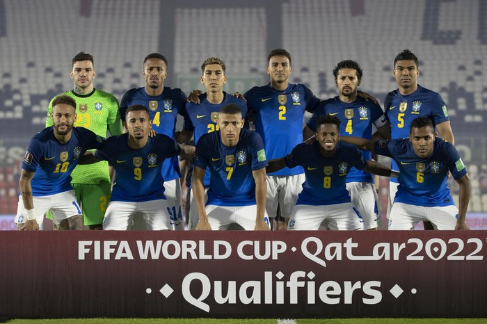

A Seleção Brasileira é a única seleção que participou de todas as edições da Copa do Mundo de futebol. Foram 5 títulos (1958, 1962, 1970, 1994 e 2002), dois vice-campeonatos (1950 e 1998), dois terceiros lugares (1938 e 1978) e dois quartos lugares (1974 e 2014) em 20 participações. A Copa do Mundo de 2018 foi a 21ª participação do Brasil em Mundiais de Futebol.
É a seleção mais bem-sucedida da história do futebol mundial, sendo a recordista em conquistas em Copas do Mundo, com cinco títulos invictos (1958, 1962, 1970, 1994 e 2002) e quatro títulos da Copa das Confederações FIFA (1997, 2005, 2009 e 2013).
| Data/Hora | Estádio | Adversário |
|---|---|---|
| 24 nov 2022 / 16h00 | Estádio Nacional de Lusail | Sérvia |
| 28 nov 2022 / 07h00 | Estádio 974 (Estádio Ras Abu Aboud) | Suíça |
| 2 dez 2022 / 16h00 | Estádio Nacional Lusail | Camarões |